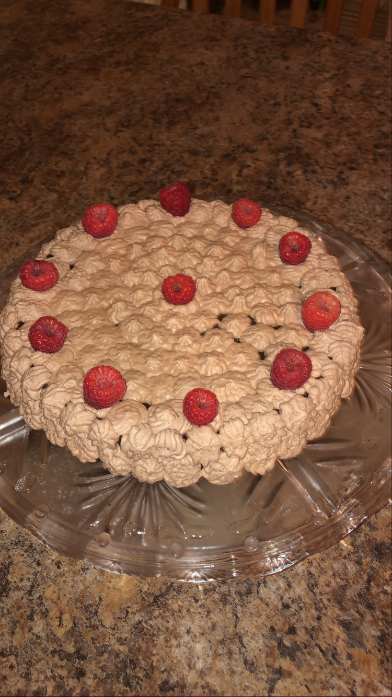

Info
Lavi made this cake for her sister's birthday. This cake had such a rich chocolate flavor, which paired really well with the light mocha cream.
Total Time
3 hours (including cooling time)
Servings
16
Ingredients for the Cake
1 stick or 8 tbs
Butter (unsalted/room temperature)
1 cup
chopped semi-sweet chocolate chips
2/3 cups
Sugar
2 tsp
Instant Coffee Powder or Espresso Powder
2 tsp
Vanilla Extract
4
Eggs
1/3 cup
Cocoa Powder (unsweetened)
1/2 tsp
Salt or Sea Salt
Ingredients for the Mocha Cream
1 1/2 tsp
Instant Coffee Powder of Espresso Powder
1 1/2 tsp
Warm Water
1 cup
Heavy Whipping Cream
1/4 cup
Powdered Sugar
1 tbs
Cocoa Powder (unsweetened)
optional
Raspberries for topping
Directions for Cake
Pre-heat oven to 350°, and lightly grease a pan with butter, then line with parchment paper and grease again.
In a small bowl, melt the butter and then incrementally add and mix in the chocolate until smooth.
Add in the sugar and coffee powder and vanilla extract. Then add in the eggs until combined.
Finally add in the cocoa powder and salt, continue mixing until incorporated.
Place a raised baking dish filled with water on the bottom rack of the oven.
Pour the batter into the prepared pan. Place on the top rack of the oven, and bake for 30 minutes, or until the center is set.
Remove and let cool on wire rack for about 10 minutes. Then slide a knive around the edges and invert cake onto a serving platter.
Refrigerate for 2 hours.
Directions for Mocha Cream Topping
Mix the coffee powder and warm water in a small bowl.
In a large bowl, whisk heavy cream, sugar, cofee mixture, and cocoa powder, until slightly stiff peaks form.
This topping can be piped on top of the cake, or served on the side. We additionally garnished with raspberries.
Go to back to recipes.